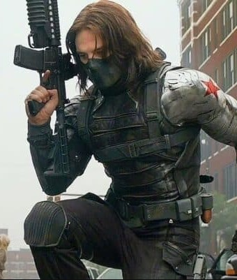
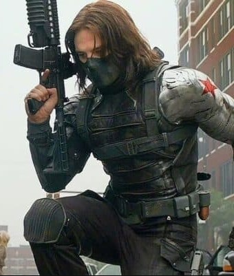

Character Overview
The Winter Soldier is a deadly, highly skilled assassin known for his enhanced strength, cybernetic arm, and unmatched combat abilities. Feared across the world for decades, he operated from the shadows, completing covert missions with ruthless efficiency. Though many saw him as a ghost story or a myth, the Winter Soldier was a real and terrifying force—silent, precise, and unstoppable. His identity, long buried under brainwashing and manipulation, hides a tragic past tied deeply to Captain America and the Avengers.
Bucky Barnes: The Man with the Silver Arm
Behind the mask is James Buchanan “Bucky” Barnes, once Steve Rogers’ childhood best friend and loyal ally during World War II. Thought to have died on a mission, Bucky was instead found by HYDRA, who resurrected and transformed him into the Winter Soldier. His memories were erased, his body enhanced, and his free will stripped away. Over time, with Steve’s help, Bucky slowly began reclaiming his identity and fighting to break free from HYDRA’s control, rebuilding his life one step at a time.
Origin Story
James Buchanan "Bucky" Barnes Jr. is born in Shelbyville, Indiana in 1925. Barnes grows up as an Army brat alongside his younger sister Rebecca. Their mother Winnifred dies when both children are still young. In 1938, their father James Barnes Sr. is killed during a training exercise at U.S. Army Camp Lehigh in Virginia. Bucky and Becca are adopted by their father's colleague Major Samson. Becca is sent to boarding school, while Bucky remains at Camp Lehigh and becomes its unofficial mascot. By his teens, Bucky makes a side-career of smuggling goods into the camp for the soldiers. Engaging in exercises with the soldiers in training, Bucky shows a natural ability for marksmanship and physical combat.
Bucky meets and befriends Steve Rogers at Camp Lehigh in 1941. During this same time, newspapers and radio programs share news of a mysterious new hero called Captain America, a man who was turned into a super-soldier via a special serum and technology developed by Abraham Erskine. Bucky accidentally discovers Steve's secret identity after walking into his quarters; Steve decides to recruit Bucky as his partner, personally training him to become a fierce combatant. The two are members of the Invaders alongside Namor, the android Human Torch, and Toro.
When the Red Skull captures and hypnotizes the Invaders into serving the Nazis, only Bucky escapes. Bucky recruits help from Jeff Mace, a new masked hero called Patriot, and then broadcasts a call for help from America's crime-fighters so they can stop the Red Skull. Several answer, leading to the formation of the Liberty Legion under Bucky and Mace's leadership. The Red Skull then sends his hypnotized Invaders against the Liberty Legion. During this adventure, Bucky hides his true movements and plans by asking Fred Davis, a batboy for the New York Yankees, to temporarily wear his costume and impersonate him. The Invaders are freed from hypnotic control and return to the European theatre with Bucky, while the Liberty Legion remains as the "homefront" team in the United States. From that point on, both teams aid each other whenever necessary.
In the closing days of World War II in 1945, Bucky and Captain America find Heinrich Zemo trying to destroy an experimental Allied drone plane. When Zemo launches the plane with an armed explosive device on it, Bucky and Captain America jump aboard. Captain America falls off the plane and descends to the Arctic Circle below. Simultaneously, Bucky unsuccessfully tries to defuse the bomb, and it explodes in mid-air before reaching its intended target. With both Bucky and Steve vanishing from the public eye after the plane's explosion, they are assumed dead. In truth, Rogers is frozen alive by the freezing waters of the North Atlantic, the super-soldier serum in his system keeping him alive and in suspended animation.
Soon after the explosion, Bucky is found by USSR General Vasily Karpov and the crew of a Russian patrol submarine. Despite possessing no enhanced traits such as Captain America or any superhuman abilities, Bucky is still alive, his body partially preserved by the freezing waters, and is able to be revived. Along with the loss of his left arm, he has sustained brain damage and amnesia. Realizing that Bucky has retained his learned combat skills, expertise, and combat instincts, Karpov sends him to the secret Soviet agency Department X.
Where He Appears
The Winter Soldier appears throughout the Marvel Cinematic Universe, particularly in Captain America: The Winter Soldier, Captain America: Civil War, Avengers: Infinity War, Avengers: Endgame, and the Disney+ series The Falcon and the Winter Soldier.